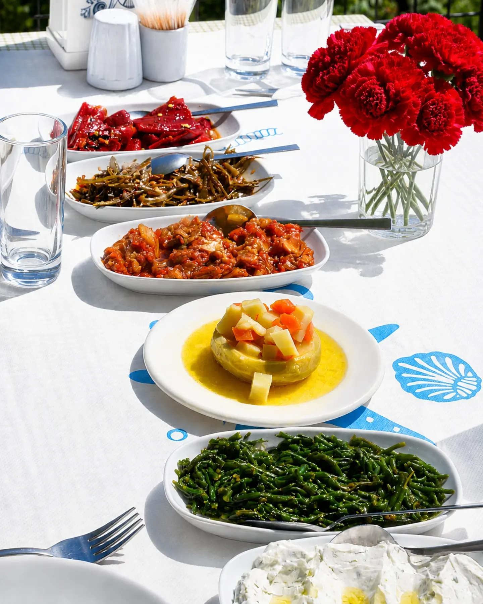
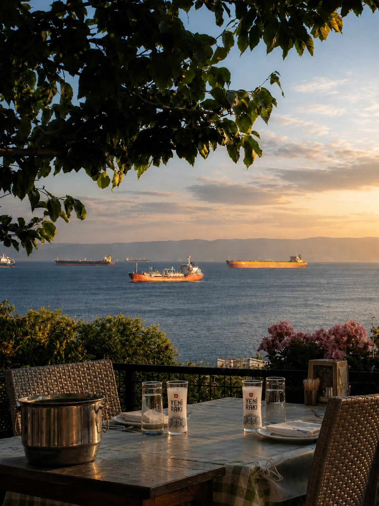
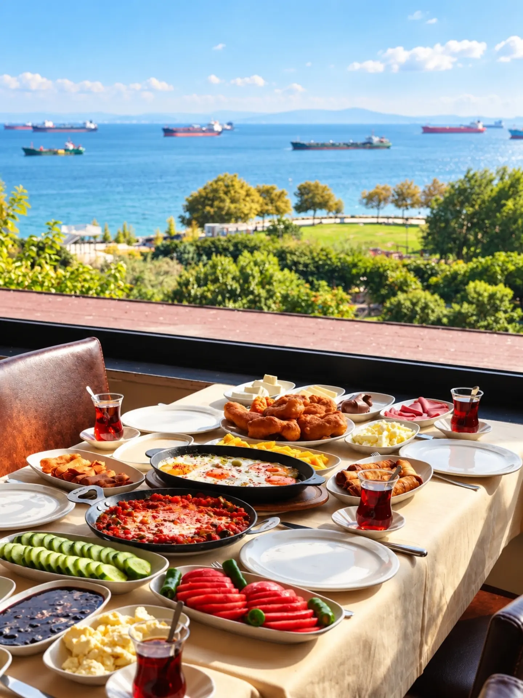
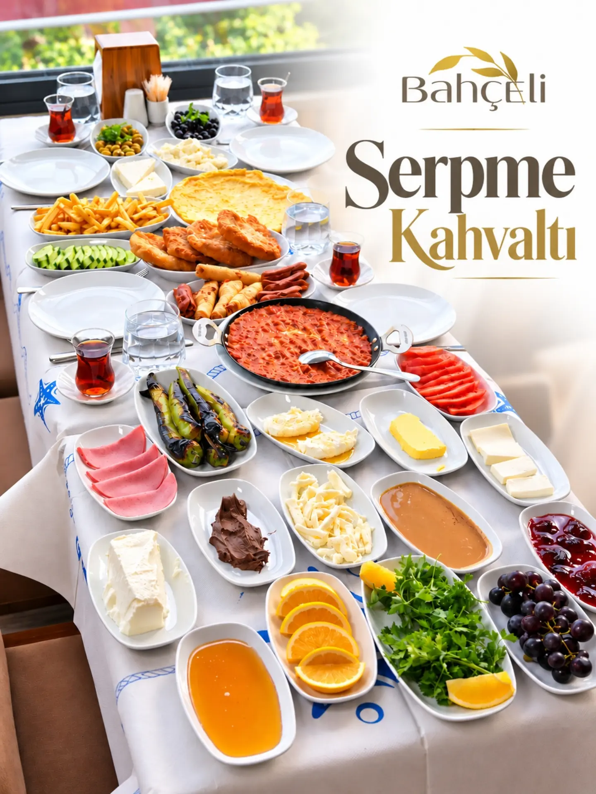
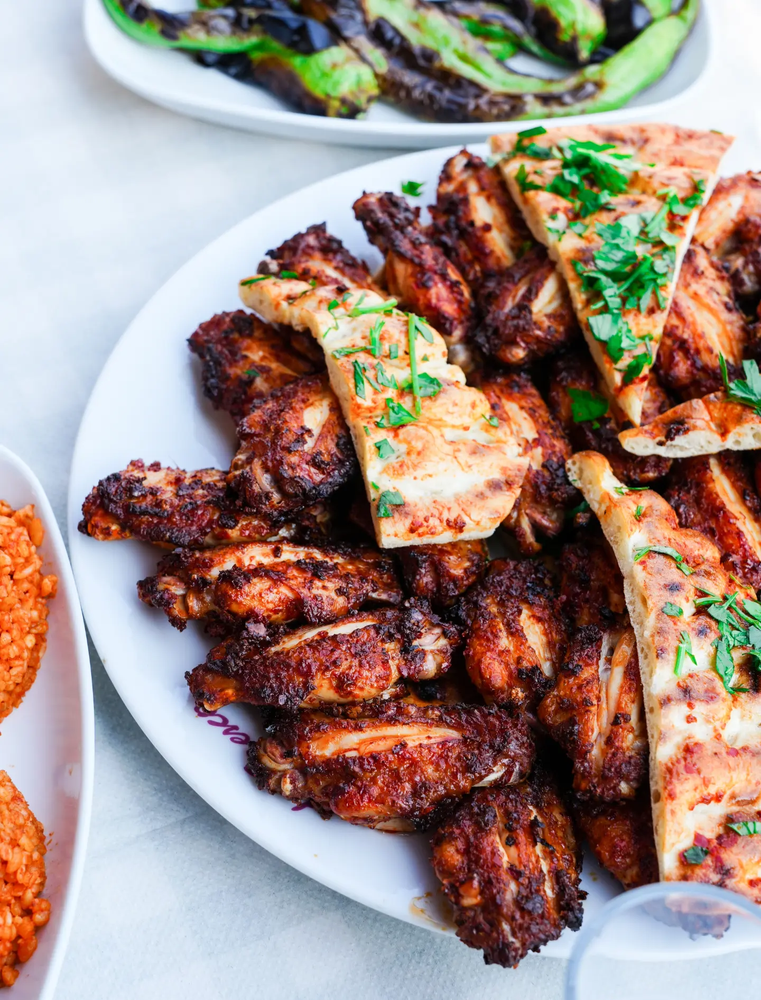
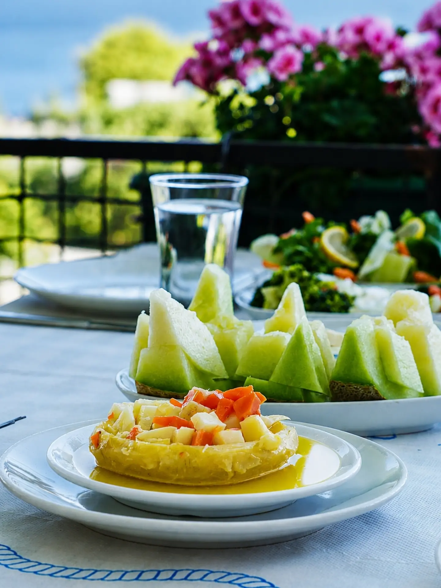
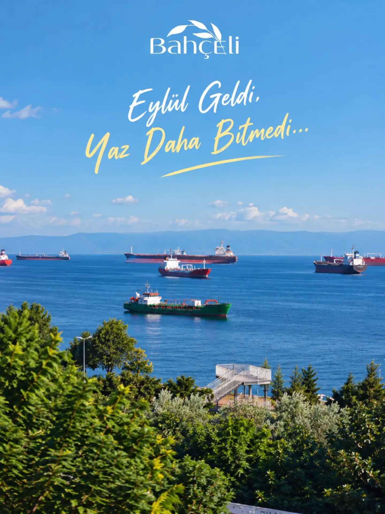
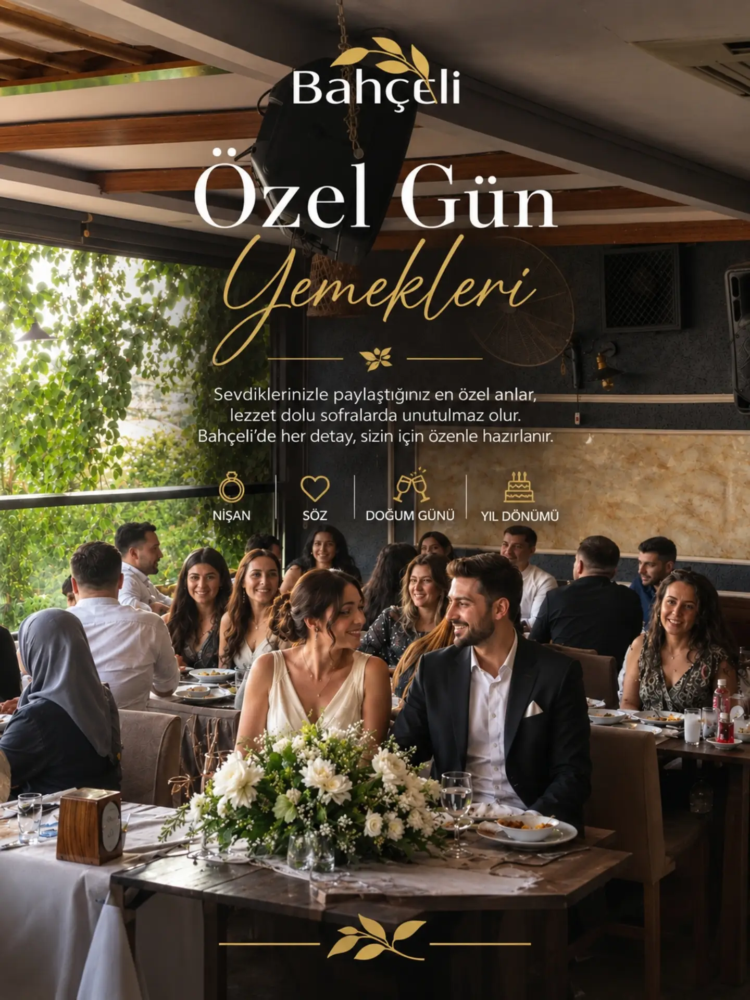

Meze seçkisi
Közlenmiş biber, deniz börülcesi, zeytinyağlı enginar, haydari ve günün mezeleri.

Sabah serpme kahvaltı, akşam meze ve ızgara. Akşamları sahnede canlı türküler.
Türküler aynı yerde buluşturur. Akşam programlarına yerinizi önceden ayırtın, sahneye yakın masalar erken doluyor.


Onlarca çeşit, sıcak pişi ve sigara böreği, tavada menemen. Terasta, denizi izleyerek.
Zeytinyağlılardan közlemelere geniş meze seçkisi, ızgaralar, kuzu ve Avcılar'ın en çok konuşulan kanadı.

Közlenmiş biber, deniz börülcesi, zeytinyağlı enginar, haydari ve günün mezeleri.

Baharatlı, lavaş eşliğinde. İddialıyız: Avcılar'ın en iyi kanadı.

Kavun, beyaz peynir ve soğuk mezelerle, gün batımında terasta.

"Şehrin gürültüsünden uzak, harika bir deniz manzarasına sahip, huzurlu ve yeşillikler içinde bir bahçe."
Google yorumu

Nişan, söz, doğum günü ya da yıl dönümü. Masa düzeninden menüye her detayı birlikte planlayalım.
Serpme kahvaltıya ekstra olarak menemen söyledik ve çok beğendik. Teras katın manzarası da çok güzeldi. Tekrar gelmeyi düşüneceğim bir mekân.
Mükemmel manzara eşliğinde mükemmel bir yıl sonu kahvaltısı yaptık. Her şey çok lezzetli, hizmet kaliteli ve çalışanlar çok güler yüzlüydü.
İşletme sahibi ve çalışanlarının yaklaşımı çok içten; hizmeti ve kaliteli sanatçılarıyla tam bir aile mekânı. Özellikle kavurma ve kanadını tatmanızı tavsiye ederim.
Menü, fiyat, çalışanların ilgisi, ortam ve sahne alanlar mükemmel. Canlı müzik için ya da giriş için ayrı ücret yok, ne yiyip içerseniz onu ödüyorsunuz. Harika bir gece geçirdik.
Kahvaltı standartların üzerinde ve bol. Manzarası güzel, rahat bir mekân. Fiyat performans fena değil.
Dün ilk defa gittik, çok memnun kaldık. Yemekler de mezeler de çok lezzetliydi. İlgi ve alakası için Sinan Bey’e teşekkürler.
Teras katta yemeğimizi yedik; manzarasıyla, yemeğiyle, hizmetiyle çok beğendik.
Denizköşkler'de, sahil parkına bakan terasımızda sizi ağırlamaktan mutluluk duyarız.